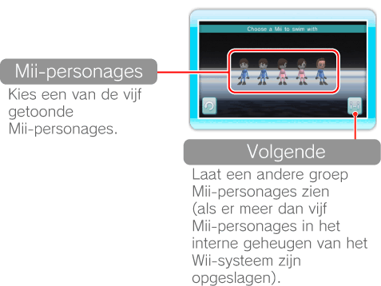
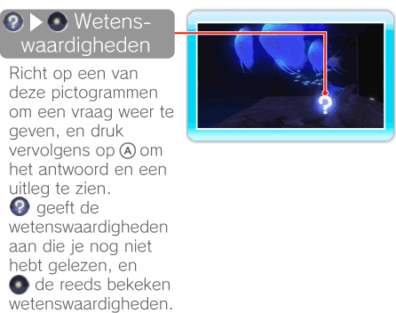

14 |
Met een Mii-personage zwemmen |
 |
|
Richt op in het aquariumscherm en druk op
 om uit de Mii-personages die je hebt opgeslagen in het interne geheugen van het Wii-systeem, er een te kiezen. om uit de Mii-personages die je hebt opgeslagen in het interne geheugen van het Wii-systeem, er een te kiezen.Opmerking: je kunt Mii-personages maken in het Mii-personagekanaal. Lees het hoofdstuk "Mii™-personagekanaal" in de Wii-handleiding voor kanalen en instellingen voor meer informatie over het maken van Mii-personages.

Richt op een Mii-personage en druk op
. Sommige Mii-personages kunnen willekeurig zijn samengesteld.
Nadat je een Mii-personage hebt gekozen, kun je het zien zwemmen. Je Mii-personage kan bovendien vissen voeren of op zoek gaan naar wetenswaardigheden.

Opmerking: Mii-personages zwemmen volgens een vast patroon en kunnen niet door de speler worden bestuurd. |
 om weer verder te zwemmen.
om weer verder te zwemmen. |
 |